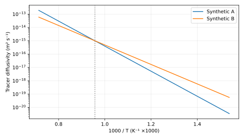

IIT Hyderabad · NPTEL · Independent study edition
High-entropy alloys and the evidence for diffusion claims
“Sluggish diffusion” is a testable comparison only after the tracer, phase, temperature, and reference material are named. Counting alloying elements does not supply those controls. A multicomponent alloy can have a high mixing entropy and still possess a fast diffusion path, a low melting range, or an Arrhenius crossover that reverses its ranking.
Source spine: L52, with ideal-entropy calculations connected to the L55 tutorial. The entropy proof and Arrhenius examples below are original derivations. The experimental boundary example is separately identified and linked to its primary paper; the plotted laboratory curves are synthetic.
24.1 What high configurational entropy establishes L52 00:20
A multi-principal-element alloy contains several components in substantial proportions rather than one overwhelmingly dominant solvent. “High-entropy alloy” is used with composition-based or ideal-entropy-based conventions. The label describes a design space, not a theorem that every member is a single-phase random solution. Define \(N_i\geq0\) as component mole fractions satisfying \(\sum_{i=1}^nN_i=1\), where \(n\) is the number of included species.
For an ideal substitutional solution with independently occupied equivalent sites, counting arrangements gives molar configurational mixing entropy
\[\Delta S_{\mathrm{mix}}=-R\sum_{i=1}^nN_i\ln N_i,\qquad 0\ln0:=0.\tag{24.1}\]Here \(R\) is the molar gas constant in Jmol⁻¹K⁻¹. The limiting convention follows from \(x\ln x\to0\) as \(x\to0+\). The independent-site assumption matters: chemical ordering or correlations change the configurational entropy relative to this ideal expression.
To maximize (24.1) for fixed component count, use a Lagrange multiplier for the sum constraint. Stationarity of \(-\sum_iN_i\ln N_i+\lambda(\sum_iN_i-1)\) gives \(-\ln N_i-1+\lambda=0\); hence all nonzero interior fractions are equal. The Hessian is diagonal with negative entries \(-1/N_i\), so the function is strictly concave and the stationary point is the global maximum. Thus
\[\Delta S_{\max}=R\ln n,\qquad N_i=1/n.\tag{24.2}\]The laboratory computes \(R\ln5=13.3816\)Jmol⁻¹K⁻¹. The synthetic fractions0.4,0.15,0.15,0.15,0.15 give12.5115Jmol⁻¹K⁻¹. More equal occupation increases ideal entropy for fixed species count. This calculation says nothing yet about vacancy formation, migration barriers, or the diffusion coefficient.
Phase stability requires comparing competing molar Gibbs free energies \(G=H-TS\), where \(H\) is molar enthalpy, \(S\) molar entropy, and \(T\) absolute temperature. A large ideal mixing entropy alone does not prove that a disordered solution beats an ordered compound or a phase-separated state. The lecture discusses four proposed effects: entropy stabilization, local lattice distortion, nonadditive composition-dependent properties often called a cocktail effect, and comparatively slow diffusion. The first concerns competing free energies; distortion concerns local atomic environments; nonadditivity concerns a chosen property; sluggishness requires a specified kinetic comparison. They are hypotheses or observations to test in named systems. Equation(24.2) proves none of them as a universal kinetic law.
24.2 Match the coefficient before matching the materials L52 12:42
A tracer experiment follows one named species in a chemically uniform matrix. An interdiffusion experiment follows a composition field containing several interacting species. A grain-boundary B-tail experiment can identify \(P=s_b\delta D_b\) rather than \(D_b\) alone. These measurements can all involve the same alloy while answering different questions. Lower interdiffusion need not mean lower tracer mobility: thermodynamic factors and cross-coupled fluxes can change the relation between them.
For a multicomponent solution, the flux of species \(i\) can depend on several chemical-potential gradients. One illustrative linear-response form is \(\mathbf J_i=-\sum_jL_{ij}\nabla(\mu_j/T)\) in a specified frame, where \(\mu_j\) is molar chemical potential and \(L_{ij}\) are phenomenological coefficients with units set by the flux and force convention. Independent composition coordinates are required because fractions sum to one. A pseudo-binary couple designed to keep spectator concentrations nearly constant can simplify inference, but measured deviations from that condition must be checked. A pseudo-binary fit does not automatically identify a complete multicomponent mobility matrix.
Radiotracer sectioning, stable-isotope SIMS, electron-probe composition measurements, atomistic simulations, and phase-field or continuum calculations supply different observables. A simulation can estimate hop statistics or profile evolution only within its Hamiltonian and dynamical assumptions. A composition profile includes instrument resolution and calibration. A tracer experiment samples the species chosen and the paths populated during its anneal. Agreement among methods is strongest when the forward models predict the actual measured quantity rather than compare coefficients that merely share units.
Barrier distributions add another distinction. A chemically diverse neighborhood can raise some barriers and lower others. Averaging barriers and then exponentiating is generally different from averaging activated rates. For parallel independent channels with common attempt scale, \(\langle e^{-E/(k_BT)}\rangle\geq e^{-\langle E\rangle/(k_BT)}\) by convexity, where \(E\) is a per-event barrier and \(k_B\) Boltzmann's constant. A real connected network can instead be limited by serial bottlenecks and return correlations. This inequality exposes why one average barrier is insufficient; it does not by itself predict the effective diffusivity of a random alloy.
24.3 An Arrhenius crossover reverses a ranking L52 20:50
Let two tracer coefficients be \(D_A=A_Ae^{-Q_A/(RT)}\) and \(D_B=A_Be^{-Q_B/(RT)}\), with positive prefactors in m²s⁻¹ and constant molar enthalpies in Jmol⁻¹. Their ratio obeys
\[\ln(D_A/D_B)=\ln(A_A/A_B)-\frac{Q_A-Q_B}{RT}.\tag{24.3}\]Setting the ratio to one gives \(T_c=(Q_A-Q_B)/[R\ln(A_A/A_B)]\) when the denominator is nonzero. A physical positive crossover exists only if numerator and denominator have the same sign. Equal prefactors with unequal enthalpies have no finite crossover; equal enthalpies give a temperature-independent ratio. The formula presumes both phases and mechanisms remain valid at the calculated temperature.
Choose synthetic A with prefactor \(10^{-6}\)m²s⁻¹ and enthalpy180kJmol⁻¹, and B with \(10^{-8}\)m²s⁻¹ and140kJmol⁻¹. The computed crossover is1044.67K. At800K, A gives \(1.76781\times10^{-18}\)m²s⁻¹ and B \(7.22964\times10^{-18}\)m²s⁻¹. At1200K, A gives \(1.46203\times10^{-14}\)m²s⁻¹ and B \(8.05522\times10^{-15}\)m²s⁻¹. The ranking reverses although each coefficient remains an ordinary Arrhenius law.

Now assign synthetic melting temperatures1500K to A and2000K to B. At equal homologous temperature0.6, compare A at900K with B at1200K. Their coefficients are \(3.57500\times10^{-17}\) and \(8.05522\times10^{-15}\)m²s⁻¹. This is a different experiment from a shared-temperature anneal. Both comparisons are legitimate when their question and temperature convention are explicit.
24.4 Boundary evidence and a falsifiable comparison L52 15:43
A primary Ni radiotracer study compares CoCrFeNi and CoCrFeMnNi using B- and C-regime grain-boundary measurements. It reports a crossover near800K: the five-component alloy is slower below it and faster above it. The primary locators are Vaidya etal., PDF pages5–8, Eq.(3), Table1, and Figures6–8; the published article is Scientific Reports7,12293. This is species- and alloy-specific evidence against a universal monotonic component-count rule, not a rate law for all high-entropy alloys.
The same experiment illustrates an inference chain. B conditions identify a triple product; C conditions identify a boundary coefficient. Comparing them requires a common boundary-state model and temperature extrapolation. A local atom-probe observation can constrain segregation in the sampled boundaries, with finite sampling and sensitivity limits. Absence of detectable segregation simplifies conversion between a product and a coefficient; it is not a prerequisite for studying boundary diffusion in general. Boundary energies inferred through a diffusion correlation or model are estimates, not direct calorimetric measurements.
To test a broader sluggishness claim, define a null hypothesis and an observable before selecting a normalization. For example: at each specified absolute temperature, a named Ni tracer coefficient in a single FCC phase is lower in alloy B than in alloy A by more than the combined measurement uncertainty. Keep the source protocol, specimen preparation, grain-size distribution, impurity content, and profile analysis comparable. Verify phase identity before and after annealing. If a boundary quantity is measured, characterize boundary geometry and segregation rather than silently calling the result bulk diffusion.
A useful experiment spans temperatures on both sides of a possible crossover and includes repeated specimens. Report uncertainties on slopes and intercepts together: they are often correlated, and a crossover obtained far outside the measured range can be poorly constrained. A negative result is scientifically informative when it specifies which universal assertion it rejects. It does not imply that no individual multicomponent alloy ever has slow diffusion or useful kinetic stability.
The reproducible laboratory calculates ideal entropies, the synthetic crossover, and both temperature comparisons, then checks equality of the two rates at the computed crossover. Its output contains all input parameters. It does not digitize published curves or estimate confidence intervals from missing raw data. The primary paper provides the experimental counterexample, while the code isolates the algebra behind a ranking reversal.
24.5 Exercises and worked solutions
Entropy deficit. Express the difference between maximum ideal entropy and that of a general composition as a nonnegative quantity.
Solution
Subtract (24.1) from \(R\ln n\): \(\Delta S_{\max}-\Delta S=R\sum_iN_i\ln(N_i/(1/n))\). This is \(R\) times the relative entropy of the composition distribution to the uniform distribution. Its nonnegativity follows from concavity of entropy, already established by the negative Hessian. Equality requires equiatomic composition. The identity quantifies ideal compositional unevenness; it does not quantify diffusion retardation.
No crossover. What happens if two Arrhenius coefficients have equal activation enthalpies?
Solution
Equation(24.3) reduces to \(\ln(D_A/D_B)=\ln(A_A/A_B)\). The ratio is constant. Unequal prefactors yield no crossover; equal prefactors make the coefficients identical throughout the assumed common domain. A numerical routine that divides by a vanishing enthalpy difference without treating this case misrepresents the model.
Coefficient mismatch. A smaller B-tail triple product is offered as proof of smaller bulk tracer diffusion. Diagnose the inference.
Solution
The product \(s_b\delta D_b\) measures a boundary pathway with segregation and effective width. Bulk tracer diffusion is a different coefficient. A smaller product can arise from smaller boundary mobility, segregation capacity, or width without any specified change in bulk mobility. Measure the bulk branch or an independent bulk tracer specimen and compare like quantities.
Barrier averaging. Explain why the convexity inequality in Section24.2 does not prove disorder always accelerates diffusion.
Solution
The inequality averages independent rates with a shared prefactor and parallel interpretation. Long-range diffusion also requires connected paths and includes bottlenecks, occupancy probabilities, and correlated returns. A low barrier into a deep trap can be followed by a rare escape and poor net displacement. A barrier distribution alone omits state energies and network topology. Those missing objects determine whether a rate average represents transport.
Test scope. What universal statement can the primary Ni boundary crossover reject, and what statement does it leave open?
Solution
It rejects a claim that simply adding a principal component must always lower the same boundary transport coefficient at every temperature. It leaves open whether a particular species in another phase or alloy has low diffusion over a specified temperature interval. It also leaves open bulk or interdiffusion comparisons until their own observables and data are examined. The conclusion should have the same scope as the measurement.
Experimental design. Propose an observable that would distinguish reduced tracer mobility from a reduced thermodynamic driving force in an interdiffusion comparison.
Solution
Measure species tracer diffusion in uniform compositions spanning the couple, and obtain independently assessed chemical-potential derivatives for the same phase and temperature. Compare these with composition-profile evolution in an explicit multicomponent transport model. The tracer experiment constrains motion without the chemical-composition gradient; thermodynamic data constrain the force. Additional cross-correlation information may still be required to identify the full kinetic matrix. One scalar profile cannot generally supply every matrix entry.
A defensible comparison names its observable and controls before assigning a material-class explanation. Mixing entropy is a well-defined thermodynamic quantity; a diffusion ranking is a conditional experimental result.
Python laboratory
Run code/ch24.py. Inputs and scientific limits are specified in the chapter and program.
Complete runnable source
"""Ideal mixing entropy and explicitly synthetic diffusion comparisons."""
from pathlib import Path
import json
import numpy as np
import matplotlib
import matplotlib.pyplot as plt
matplotlib.use("Agg")
matplotlib.rcParams["svg.hashsalt"] = "ch24"
ROOT = Path(__file__).resolve().parents[1]
R = 8.31446261815324
def entropy(fractions):
x = np.asarray(fractions, dtype=float)
if np.any(x < 0) or not np.isclose(x.sum(), 1):
raise ValueError("Mole fractions must be nonnegative and sum to one")
return float(-R * np.sum(x[x > 0] * np.log(x[x > 0])))
def main():
# Synthetic materials A/B: SI prefactors; Q in J/mol; Tm in K.
A = {"prefactor": 1e-6, "Q": 180000.0, "Tm": 1500.0}
B = {"prefactor": 1e-8, "Q": 140000.0, "Tm": 2000.0}
def rate(material, T):
return material["prefactor"] * np.exp(-material["Q"] / (R * T))
cross = (A["Q"] - B["Q"]) / (R * np.log(A["prefactor"] / B["prefactor"]))
tests = {}
for T in [800.0, 1200.0]:
tests[str(T)] = {"A": float(rate(A, T)), "B": float(rate(B, T))}
homologous = {
"T_over_Tm": 0.6,
"A_T_K": 900.0,
"B_T_K": 1200.0,
"A": float(rate(A, 900.0)),
"B": float(rate(B, 1200.0)),
}
assert abs(rate(A, cross) / rate(B, cross) - 1) < 1e-13
fractions = [0.4, 0.15, 0.15, 0.15, 0.15]
out = {
"status": "synthetic rate comparison; no empirical HEA fit",
"entropy_equiatomic_5_J_mol_K": entropy([0.2] * 5),
"entropy_nonequiatomic_J_mol_K": entropy(fractions),
"crossover_K": float(cross),
"absolute_comparisons": tests,
"homologous_comparison": homologous,
"materials": {"A": A, "B": B},
}
T = np.linspace(650, 1400, 200)
fig, ax = plt.subplots(figsize=(7, 4))
ax.semilogy(1000 / T, rate(A, T), label="Synthetic A")
ax.semilogy(1000 / T, rate(B, T), label="Synthetic B")
ax.axvline(1000 / cross, color="gray", linestyle=":")
ax.set(xlabel="1000 / T (K⁻¹ ×1000)", ylabel="Tracer diffusivity (m² s⁻¹)")
ax.legend()
ax.grid(alpha=0.25)
fig.tight_layout()
fig.savefig(ROOT / "assets/ch24-crossover.svg", metadata={"Date": None})
plt.close(fig)
(ROOT / "code/ch24-output.json").write_text(
json.dumps(out, indent=2) + "\n"
)
print(json.dumps(out, indent=2))
if __name__ == "__main__":
main()
Recorded execution output
{
"status": "synthetic rate comparison; no empirical HEA fit",
"entropy_equiatomic_5_J_mol_K": 13.381611359171915,
"entropy_nonequiatomic_J_mol_K": 12.511505932902232,
"crossover_K": 1044.6724024112932,
"absolute_comparisons": {
"800.0": {
"A": 1.7678095384920048e-18,
"B": 7.229636783270254e-18
},
"1200.0": {
"A": 1.462032348885485e-14,
"B": 8.055224571251813e-15
}
},
"homologous_comparison": {
"T_over_Tm": 0.6,
"A_T_K": 900.0,
"B_T_K": 1200.0,
"A": 3.5749994217199207e-17,
"B": 8.055224571251813e-15
},
"materials": {
"A": {
"prefactor": 1e-06,
"Q": 180000.0,
"Tm": 1500.0
},
"B": {
"prefactor": 1e-08,
"Q": 140000.0,
"Tm": 2000.0
}
}
}